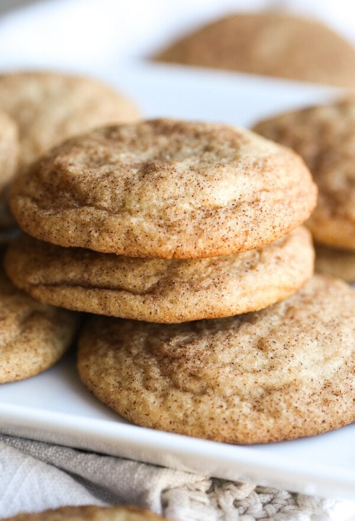

Snickerdoodle Cookies

Description
Soft, buttery, and chewy, these is the Best Snickerdoodle Recipe you'll find! No one will be able to resist these classic cookies and they're super easy to make too.
Ingredients
- Butter
- Sugar
- Large eggs
- Vanilla extract
- Baking soda
- Cream of tartar
- Salt
- Ground cinnamon
- Flour
Steps
- Make the dough. Cream the butter and sugars until light and fluffy. Add in the egg, egg yolk, vanilla, baking soda, cream of tartar, salt, and cinnamon. Mix for one minute then reduce the speed to low and add the flour. Mix until just combined.
- Form the cookies. Stir together the cinnamon and sugar in a small bowl. Using a medium (2-tablespoon) cookie scoop, portion out the dough and roll it into a ball. Then roll each cookie dough ball into the cinnamon sugar mixture until coated.
- Bake. Bake the cookies for 12 to 15 minutes, turning halfway through. Cool on the baking sheet for 3-4 minutes, then transfer to a wire rack to cool completely.